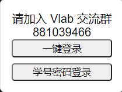
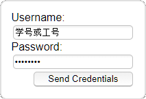
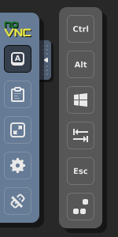
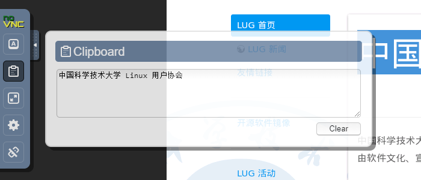
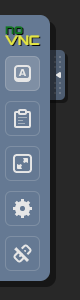

使用浏览器登录虚拟机¶
注意
该登录方式只适用于名称中带有 desktop 的虚拟机镜像，通常为 01 到 09 号镜像。
浏览器支持
此登录方式需要浏览器支持。以下浏览器是受支持的：
- Google Chrome 49 或以上
- Mozilla Firefox 44 或以上
- Safari 11 或以上
- Opera 36 或以上
- Internet Explorer 11
- Microsoft Edge 12 或以上
- Microsoft Edge Chromium 版
我们推荐最新版本的 Google Chrome 和 Mozilla Firefox，它们能提供最完整的功能和最好的使用体验。
浏览器登录非常简单，只需要打开 在线登录页面，可以选择一键登录或者学号密码登录：

如果已经登录过 vlab 虚拟机管理页面，那么点击「一键登录」即可成功进入虚拟机页面
同时你也可以选择使用学号密码登录：

密码是什么？
VNC 登录方式使用 Vlab 平台的登录密码。还没设置？
设置中文输入法¶
新虚拟机已默认启用中文输入法
2 月 23 日以后创建的新虚拟机（ID 大于等于 1095）已默认启用中文输入法。旧虚拟机请参阅桌面设置相关章节。
使用组合键¶
客户端更方便
使用 RealVNC 客户端能够更方便地使用虚拟机的完整功能，因此如果你经常在虚拟机上进行复杂操作的话，我们建议你使用 RealVNC 客户端。不同平台的使用教程可以在左侧目录中查找。
在浏览器中使用组合键会受到一定限制，例如你的浏览器很可能会将 Ctrl+W 理解为“关闭当前标签”，或将 Ctrl+T 理解为“打开一个新标签”。为了能将这些组合键正确发送至虚拟机，你可以使用侧边栏提供的组合键功能，如图：

从上到下的 6 个按键分别为 Ctrl, Alt, Super, Tab, Esc 和 Ctrl+Alt+Del 组合键。点击它们中的一个或多个，再按键盘上的字母数字键，即可向虚拟机发送组合键。
使用剪贴板¶
使用客户端更方便
由于浏览器的限制，使用剪贴板较为麻烦。如果你经常使用剪贴板的话，我们推荐使用 TigerVNC 客户端连接虚拟机。具体操作请在左侧查找相应平台的使用说明。
在虚拟机中复制文字后，点击展开左侧工具栏的第二个按钮即可查看虚拟机剪贴板中的内容。

如果想从主机中复制文字进虚拟机，可以将文字粘贴进左侧工具栏弹出的文本框中，即可在虚拟机中粘贴。
由于技术限制，从浏览器复制进虚拟机的中文会变成乱码，从虚拟机复制出来的文字不受影响。
左侧工具栏说明¶
左侧工具栏一共有 5 个按钮，如图：

从上往下功能依次为：
桌面设置¶
关于一些常用的桌面设置，如
- 修改 VNC 分辨率
- 中文输入法
等，请参阅桌面设置页面。
命令行登录¶
Vlab 支持在浏览器中通过命令行 SSH 登录虚拟机，登录地址为 https://vlab.ustc.edu.cn/wetty。
密码是什么？
Vlab password 指的是 Vlab 平台的登录密码。还没设置？
TBD